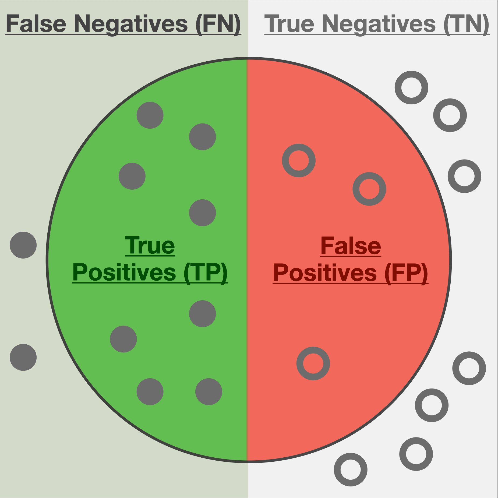
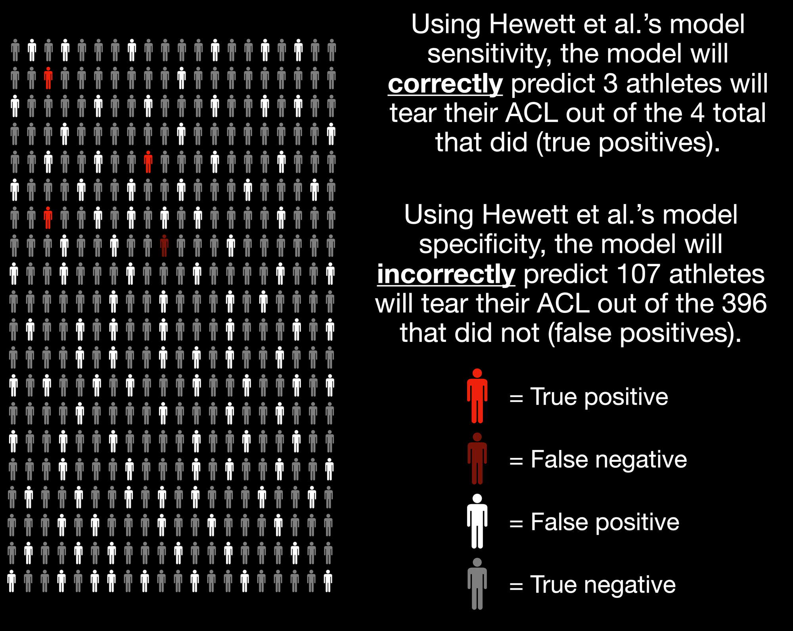
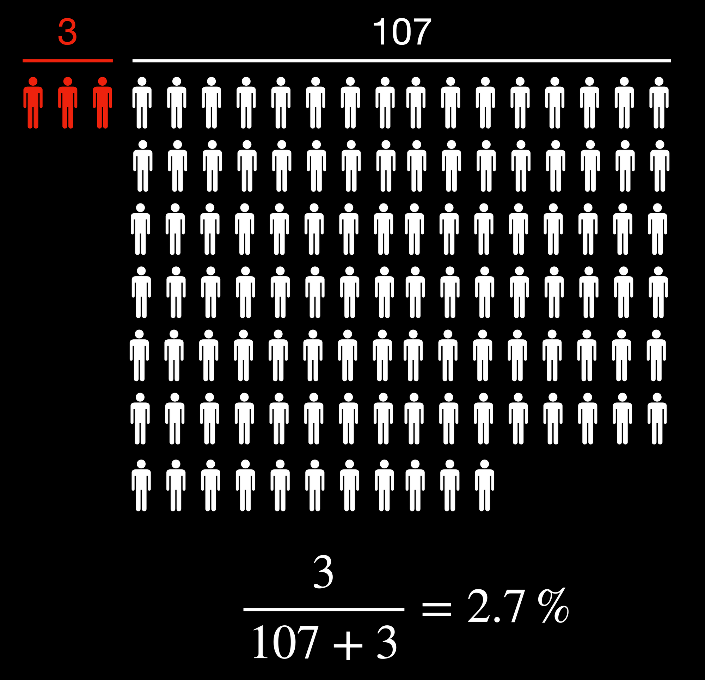

Two Technical Issues with Injury Prediction Models
In the past, researchers and practitioners have made relatively simple linear or logistic regression models to predict injuries. For example, Hewett et al. (2005) used peoples' knee abduction movements and moments during a drop vertical jump to prospectively identify anterior cruciate ligament (ACL) injury risk. Since this seminal work, the same group has also identified other variables, such as tibia length, knee flexion range of motion, mass, and quadriceps-hamstring ratio, as correlated with an ACL injury (Myer et al., 2010). As technology advances and it becomes easier to collect more diverse data conveniently (e.g., biomechanical data, social determinants of health, psychological status, etc.), it is becoming common to implement machine learning algorithms to improve the accuracy of prediction models (see Van Eetvelde et al., 2021 for a relatively recent review).
Despite years of researchers debating the utility of predicting ACL injury from movement assessments (e.g., see Bahr, 2016; Hewett, 2016; Nilstad et al., 2021; Russo et al., 2021), there are several reasons that researchers and practitioners are still interested in building injury prediction models. One of the main reasons is to justify training interventions that aim to mitigate the injury before it occurs. Additionally, and at risk of sounding a bit insensitive, they can be relevant for (sport) organizations attempting to manage their labour assets (i.e., their workers/players). Given that musculoskeletal injuries, in general, can exceed USD 277 billion annually (Yelin, 2003), accurate injury predictions can allow organizations to project costs to their businesses better.
Of course, George Box already stated that all models are wrong, but some are useful. However, the question is, how useful are these injury prediction models for improving practical decision-making and intervention design in practice? There are two major hurdles that I often don't see talked about as frequently when discussing the potential utility of prediction models. This article intends not to tell people whether they should (not) use injury prediction models but instead share some technical concerns that I firmly believe researchers and practitioners must consider before or during injury prediction.
The first issue that researchers and practitioners must consider when interpreting the outputs of these models is the base rate of injuries. The second is the assumption that better predictions result in better decisions and interventions is unjustified (and, perhaps, it may result in worse decisions). After outlining these issues, I'll share my thoughts on some potential solutions to these issues.
The base rate of injuries must be considered
The problem
An example best illustrates the first concern. First, assume we're using Hewett et al.'s (2005) logistic regression model to assess ACL tear risk based on knee abduction loads during a drop vertical jump. Their model reported a sensitivity of 78% and a specificity of 73%. The following figure visually depicts an approximation of the sensitivity and specificity of this model:

Sensitivity refers to the model's ability to correctly identify the construct of interest (i.e., ACL injury) and is computed as:
\[ Sensitivity = \frac{TP}{TP+FN} \]
The number of filled-in circles in the green circle relative to the number on the total left side of the figure above represents the sensitivity.
Specificity, on the other hand, refers to the model's ability to discriminate against those who would not have the construct of interest:
\[ Specificity = \frac{TN}{TN+FP} \]
The number of open circles in the grey area relative to the total number of open circles on the right side of the figure above represents the specificity.
This model performance looks promising, at least initially. The problem is that interpreting the sensitivity and specificity alone is misleading without considering the baseline prevalence of ACL injuries. Omitting this information in our interpretations is referred to as the base rate fallacy, which psychologists have studied for a long time (e.g., Kahneman and Tversky, 1973, Bar-Hillel, 1980).
Again, an example can illustrate the implications of not considering the base rate when interpreting the sensitivity and specificity of a model. Consider that the prevalence of ACL injuries per season is about 1.1% for adolescent female soccer players (Gornitzky et al., 2016). In other words, without any extra information, we should expect that an adolescent female soccer athlete has a 1.1% risk of tearing their ACL this season. Next, let's assume we've assessed 400 athletes with this logistic regression model. Visually, this is what we should expect from a model with these sensitivity and specificity characteristics:

After considering the base rate, the person's actual risk of tearing their ACL given that the model predicts an ACL tear is the ratio of true positives to total positives:

Given that the model predicted an ACL tear, the updated 2.7% probability of the athlete tearing their ACL isn't overly convincing relative to the baseline of 1.1%. But perhaps this is because we've used a simple logistic regression where knee abduction moments during a single drop vertical jump was the only independent variable. Surely the updated probability will be much higher given the model predicts an ACL injury if we use a larger battery of tasks, more variables, and more sophisticated models, right?
Unfortunately, not quite. Even if we had a state-of-the-art machine learning model that was 100% sensitive and 99% specific, the updated probability of these adolescent female athletes tearing their ACL given the model predicts they would get injured is now 50% (you can verify the calculations using this diagnostic test calculator). This model performance is much better, but the probability that an athlete will get injured, given the model predicts an ACL injury, is about the same as flipping a fair coin.
Potential solutions
Several authors have recently written about a complex systems approach to predicting injuries. For example, Bittencourt et al. (2016) wrote an excellent paper outlining that a complex systems approach for sports injuries may be more fruitful than simple risk factor identification. Briefly, this complex systems approach accounts for the interconnectedness between variables and multiple levels of the biological system by seeking patterns of interactions between determinants to understand why and when injuries may emerge. The Rebel Movement Blog also wrote a fantastic article inspired by a recent paper by Stern et al. (2020) that describes athletes as "hurricanes" who constantly evolve and adapt based on their interaction with the environment. One of the main arguments by Stern et al. (2020) is that:
as with the tracking of a volatile weather pattern like a hurricane, frequent sampling of variables through athlete testing is a prerequisite to understanding the behavior of the human system and to detecting when there is a change in the resistance of the system to injury.
Therefore, not only should a dynamical systems-based approach to prediction models be taken, but researchers and practitioners should make more frequent observations when forecasting injuries. The dynamical systems approach to predicting injuries requires much more research as there are still various gaps in our knowledge of motor control. However, the same simple statistics in the previous section can outline the power of sampling these variables more frequently.
Suppose we used a model with the same 78% sensitivity and 73% specificity. As we've already calculated, the probability of an ACL tear, assuming a base rate of 1.1%, is updated to 2.7% if the model predicts an injury. However, what if we were to do more frequent testing of this athlete and the model kept predicting an injury? What does this do to our confidence in the athlete sustaining an ACL injury?
| Test Number | Prior Probability of ACL Injury (%) | Updated Probability of ACL Injury (%) |
|---|---|---|
| 1 | 1.1 | 2.7 |
| 2 | 2.7 | 7.1 |
| 3 | 7.1 | 18.0 |
| 4 | 18.0 | 38.6 |
| 5 | 38.6 | 64.5 |
| 6 | 64.5 | 84.1 |
As we can see from the table above, it greatly improves our confidence that an athlete may sustain an injury. Important to note is that this analysis is assuming I've done a good job at accounting for the state-dependent relationship between this model's variables and injury risk (Stern et al., 2021) (which would essentially require a superstatistical model to account for the temporal fluctuations in model parameters (e.g., see Mark et al., 2018). In other words, this is easier said than done). Regardless, it still outlines the basic principles that consistent testing will be imperative for practitioners trying to predict injury and decide whether we should intervene or for businesses to estimate workplace injury costs. Researchers have already discussed moving away from these single-test assessments to predict injuries (e.g., Russo et al., 2021). Therefore, this exercise above is just putting into numbers what some researchers have already been advocating for.
What is less commonly discussed is what this frequent testing would look like in practice. In my opinion, the best way to implement these principles in practice is to make every workout an assessment. Our lab is planning to explore this general concept further by designing and studying various "benchmark workouts" that can simultaneously prepare people for the demands of their sport while functioning as an assessment tool to guide future training.
The assumption that better predictions result in better decisions and interventions is unjustified
The problem
Before diving into this, I want to clarify that this section mainly consists of ideas adapted from Wouter van Amsterdam's blog post titled When good predictions lead to bad decisions. He does an excellent job outlining the math and general theory, so in this article, I'm only going to apply it to our previous ACL example.
First, let's highlight the general problem with this assumption. Suppose we are using a prediction model with variables \( x_1 ... x_n \) (which might represent knee abduction angles, knee flexion angles, tibia length, etc.) to justify implementing one of two specific programs, Intervention A and Intervention B. Intervention A is an ACL-specific training program that is effective for addressing risk factors associated with an ACL injury, but less effective at improving general strength for lower-risk individuals since it is overly conservative. Intervention B is a general strength training program that wasn't specifically tailored to address ACL injuries but is more effective for improving general lower extremity strength for those with lower risk since it is much less conservative relative to Intervention A. Therefore if the model doesn't predict that our athlete will tear their ACL, selecting Intervention B is more appropriate relative to Intervention A.
Now suppose we added a new variable to our prediction model, \(x_{n+1} \). After adding this new variable to the model, we can predict ACL injury with increased accuracy! Furthermore, we've noted that as \(x_{n+1} \) increases, so does the risk of tearing one's ACL. For example, we might have thought Intervention B was more appropriate for our athlete with the old model. However, the new and more accurate model suggests that we should instead implement Intervention A.
We've made a better decision now since a more accurate model has informed us, right? Well, let's hold on a second. Since we haven't done any other rigorous experiments to determine causality between these variables in our models, we've potentially made a critical mistake. Although the new variable \(x_{n+1} \) increases our prediction accuracy and is associated with an ACL injury, it might be that Intervention B is more effective for reducing \(x_{n+1} \), and thus the risk of sustaining an ACL injury, relative to Intervention A.
This has been presented a little vaguely to understand the general case. Now, let's make this a little more tangible with a real-life example. Suppose Model 1 uses an athlete's tibia length, knee valgus motion, knee flexion range of motion, and body mass (variables outlined in Myer et al., 2010). As technology advances and it becomes easier to collect more diverse data conveniently (e.g., biomechanical data, social determinants of health, psychological status, etc.), it is becoming common to implement machine learning algorithms to improve the accuracy of prediction models (see Van Eetvelde et al., 2021 for a relatively recent review).
Despite years of researchers debating the utility of predicting ACL injury from movement assessments (e.g., see Bahr, 2016; Hewett, 2016; Nilstad et al., 2021; Russo et al., 2021), there are several reasons that researchers and practitioners are still interested in building injury prediction models. One of the main reasons is to justify training interventions that aim to mitigate the injury before it occurs. Additionally, and at risk of sounding a bit insensitive, they can be relevant for (sport) organizations attempting to manage their labour assets (i.e., their workers/players). Given that musculoskeletal injuries, in general, can exceed USD 277 billion annually (Yelin, 2003), accurate injury predictions can allow organizations to project costs to their businesses better.
Of course, George Box already stated that all models are wrong, but some are useful. However, the question is, how useful are these injury prediction models for improving practical decision-making and intervention design in practice? There are two major hurdles that I often don't see talked about as frequently when discussing the potential utility of prediction models. This article intends not to tell people whether they should (not) use injury prediction models but instead share some technical concerns that I firmly believe researchers and practitioners must consider before or during injury prediction.
The first issue that researchers and practitioners must consider when interpreting the outputs of these models is the base rate of injuries. The second is the assumption that better predictions result in better decisions and interventions is unjustified (and, perhaps, it may result in worse decisions). After outlining these issues, I'll share my thoughts on some potential solutions to these issues.
The base rate of injuries must be considered
The problem
An example best illustrates the first concern. First, assume we're using Hewett et al.'s (2005) logistic regression model to assess ACL tear risk based on knee abduction loads during a drop vertical jump. Their model reported a sensitivity of 78% and a specificity of 73%. The following figure visually depicts an approximation of the sensitivity and specificity of this model:
Sensitivity refers to the model's ability to correctly identify the construct of interest (i.e., ACL injury) and is computed as:
\[ Sensitivity = \frac{TP}{TP+FN} \]
The number of filled-in circles in the green circle relative to the number on the total left side of the figure above represents the sensitivity.
Specificity, on the other hand, refers to the model's ability to discriminate against those who would not have the construct of interest:
\[ Specificity = \frac{TN}{TN+FP} \]
The number of open circles in the grey area relative to the total number of open circles on the right side of the figure above represents the specificity.
This model performance looks promising, at least initially. The problem is that interpreting the sensitivity and specificity alone is misleading without considering the baseline prevalence of ACL injuries. Omitting this information in our interpretations is referred to as the base rate fallacy, which psychologists have studied for a long time (e.g., Kahneman and Tversky, 1973, Bar-Hillel, 1980).
Again, an example can illustrate the implications of not considering the base rate when interpreting the sensitivity and specificity of a model. Consider that the prevalence of ACL injuries per season is about 1.1% for adolescent female soccer players (Gornitzky et al., 2016). In other words, without any extra information, we should expect that an adolescent female soccer athlete has a 1.1% risk of tearing their ACL this season. Next, let's assume we've assessed 400 athletes with this logistic regression model. Visually, this is what we should expect from a model with these sensitivity and specificity characteristics:
After considering the base rate, the person's actual risk of tearing their ACL given that the model predicts an ACL tear is the ratio of true positives to total positives:
Given that the model predicted an ACL tear, the updated 2.7% probability of the athlete tearing their ACL isn't overly convincing relative to the baseline of 1.1%. But perhaps this is because we've used a simple logistic regression where knee abduction moments during a single drop vertical jump was the only independent variable. Surely the updated probability will be much higher given the model predicts an ACL injury if we use a larger battery of tasks, more variables, and more sophisticated models, right?
Unfortunately, not quite. Even if we had a state-of-the-art machine learning model that was 100% sensitive and 99% specific, the updated probability of these adolescent female athletes tearing their ACL given the model predicts they would get injured is now 50% (you can verify the calculations using this diagnostic test calculator). This model performance is much better, but the probability that an athlete will get injured, given the model predicts an ACL injury, is about the same as flipping a fair coin.
Potential solutions
Several authors have recently written about a complex systems approach to predicting injuries. For example, Bittencourt et al. (2016) wrote an excellent paper outlining that a complex systems approach for sports injuries may be more fruitful than simple risk factor identification. Briefly, this complex systems approach accounts for the interconnectedness between variables and multiple levels of the biological system by seeking patterns of interactions between determinants to understand why and when injuries may emerge. The Rebel Movement Blog also wrote a fantastic article inspired by a recent paper by Stern et al. (2020) that describes athletes as "hurricanes" who constantly evolve and adapt based on their interaction with the environment. One of the main arguments by Stern et al. (2020) is that:
as with the tracking of a volatile weather pattern like a hurricane, frequent sampling of variables through athlete testing is a prerequisite to understanding the behavior of the human system and to detecting when there is a change in the resistance of the system to injury.
Therefore, not only should a dynamical systems-based approach to prediction models be taken, but researchers and practitioners should make more frequent observations when forecasting injuries. The dynamical systems approach to predicting injuries requires much more research as there are still various gaps in our knowledge of motor control. However, the same simple statistics in the previous section can outline the power of sampling these variables more frequently.
Suppose we used a model with the same 78% sensitivity and 73% specificity. As we've already calculated, the probability of an ACL tear, assuming a base rate of 1.1%, is updated to 2.7% if the model predicts an injury. However, what if we were to do more frequent testing of this athlete and the model kept predicting an injury? What does this do to our confidence in the athlete sustaining an ACL injury?
| Test Number | Prior Probability of ACL Injury (%) | Updated Probability of ACL Injury (%) |
|---|---|---|
| 1 | 1.1 | 2.7 |
| 2 | 2.7 | 7.1 |
| 3 | 7.1 | 18.0 |
| 4 | 18.0 | 38.6 |
| 5 | 38.6 | 64.5 |
| 6 | 64.5 | 84.1 |
As we can see from the table above, it greatly improves our confidence that an athlete may sustain an injury. Important to note is that this analysis is assuming I've done a good job at accounting for the state-dependent relationship between this model's variables and injury risk (Stern et al., 2021) (which would essentially require a superstatistical model to account for the temporal fluctuations in model parameters (e.g., see Mark et al., 2018). In other words, this is easier said than done). Regardless, it still outlines the basic principles that consistent testing will be imperative for practitioners trying to predict injury and decide whether we should intervene or for businesses to estimate workplace injury costs. Researchers have already discussed moving away from these single-test assessments to predict injuries (e.g., Russo et al., 2021). Therefore, this exercise above is just putting into numbers what some researchers have already been advocating for.
What is less commonly discussed is what this frequent testing would look like in practice. In my opinion, the best way to implement these principles in practice is to make every workout an assessment. Our lab is planning to explore this general concept further by designing and studying various "benchmark workouts" that can simultaneously prepare people for the demands of their sport while functioning as an assessment tool to guide future training.
The assumption that better predictions result in better decisions and interventions is unjustified
The problem
Before diving into this, I want to clarify that this section mainly consists of ideas adapted from Wouter van Amsterdam's blog post titled When good predictions lead to bad decisions. He does an excellent job outlining the math and general theory, so in this article, I'm only going to apply it to our previous ACL example.
First, let's highlight the general problem with this assumption. Suppose we are using a prediction model with variables \( x_1 ... x_n \) (which might represent knee abduction angles, knee flexion angles, tibia length, etc.) to justify implementing one of two specific programs, Intervention A and Intervention B. Intervention A is an ACL-specific training program that is effective for addressing risk factors associated with an ACL injury, but less effective at improving general strength for lower-risk individuals since it is overly conservative. Intervention B is a general strength training program that wasn't specifically tailored to address ACL injuries but is more effective for improving general lower extremity strength for those with lower risk since it is much less conservative relative to Intervention A. Therefore if the model doesn't predict that our athlete will tear their ACL, selecting Intervention B is more appropriate relative to Intervention A.
Now suppose we added a new variable to our prediction model, \(x_{n+1} \). After adding this new variable to the model, we can predict ACL injury with increased accuracy! Furthermore, we've noted that as \(x_{n+1} \) increases, so does the risk of tearing one's ACL. For example, we might have thought Intervention B was more appropriate for our athlete with the old model. However, the new and more accurate model suggests that we should instead implement Intervention A.
We've made a better decision now since a more accurate model has informed us, right? Well, let's hold on a second. Since we haven't done any other rigorous experiments to determine causality between these variables in our models, we've potentially made a critical mistake. Although the new variable \(x_{n+1} \) increases our prediction accuracy and is associated with an ACL injury, it might be that Intervention B is more effective for reducing \(x_{n+1} \), and thus the risk of sustaining an ACL injury, relative to Intervention A.
This has been presented a little vaguely to understand the general case. Now, let's make this a little more tangible with a real-life example. Suppose Model 1 uses an athlete's tibia length, knee valgus motion, knee flexion range of motion, and body mass (variables outlined in Myer et al., 2010) to predict ACL injury from a drop vertical jump. Suppose the model predicts that the athlete will tear their ACL. In that case, we will implement the ACL-specific program, Intervention A, that might include balance training, emphasis on grooving landing patterns, and prioritizing drills that emphasize perception-action coupling (Voskanian, 2013). Conversely, suppose the model predicts that the athlete will not get injured. In that case, we will instead implement a general strength training program, Intervention B, including squats, deadlifts, hip thrusts, and other lower extremity "strength" exercises.
Now suppose we assess our athlete, and Model 1 has predicted "no injury," so we select Intervention B. However, what if we included the quadricep-hamstring strength ratio as an additional factor in a new model, Model 2, to improve its accuracy? After assessing the athlete's quadricep-hamstring ratio, the updated (and more accurate) Model 2 predicts that this person will sustain an ACL injury. So should we now implement Intervention A instead?
Arguably, this could be a worse decision since the general strength training program (Intervention B) might be more appropriate for addressing the specific quadriceps to hamstring ratio weakness that's causing Model 2 to "change" its decision relative to Model 1. Therefore, the more accurate prediction model has resulted in a worse decision regarding which intervention to implement.
Yes, this is a somewhat crude example. However, it highlights the central fact that increased prediction accuracy can lead to poorer intervention decisions because we're getting a better answer to the wrong question. Rather than understanding the determinants of injury and addressing those specifically, prediction models themselves are only attempting to explain the most variance in the data possible. In other words, we're making the classic mistake of conflating correlation with causation. Although this might not matter for teams or businesses simply trying to project the costs of injuries in advance to obtain an economic advantage, it does matter for practitioners attempting to select and justify interventions based on these model outputs.
Potential solutions
The solution to this second concern is similar to that of the first, whereby a complex systems approach to identifying causality will be critical when building these models. Although the predictions themselves can guide future research, researchers must conduct actual experiments to explore and verify injuries' complex underpinnings. Bahr (2016) outlined a three-step process to develop and validate injury assessments that can be adapted and embedded in a complex systems approach:
- Conduct a prospective cohort study to identify risk factor(s) and define cut-off values (i.e., establish an association with a "training" dataset)
- Validate these risk factors and cut-off values in multiple cohorts (i.e., confirm the model accuracy using a "testing" dataset)
- Conduct a randomized control trial to test the effect of the intervention program on assessment scores/model outputs and injuries (i.e., establish causation)
Furthermore, researchers and practitioners will need to move beyond single biomechanical variables in these models/assessments. For example, despite it not being clear that frontal plane knee motion during a single movement assessment prospectively discriminates between those who do and do not sustain an ACL injury (e.g., Krosshaug et al., 2016; Romero-Franco et al., 2020; Petushek et al., 2021; Nilstad et al., 2021), researchers consistently find large displacements and velocities in frontal and transverse plane knee motion and minimal sagittal plane knee motion when ACLs tear in team sport settings (e.g., Olsen et al., 2004; Krosshaug et al., 2007; Shimokochi et al., 2008; Hewett et al., 2009; Koga et al., 2010; Carlson et al., 2016; Lucarno et al., 2021). Therefore, it is more likely the general knee movement behaviour in all three planes (Quatman et al., 2010) across multiple task, environmental, and personal constraints (Davids et al., 2003) is what researchers should assess, not the behaviours of any single task and constraint combination at a single instance in time. However, a prerequisite for assessing these general movement behaviours is clear statistical factor structures, requiring further research (I'll discuss this important statistical concept in a future post).
Similarly, a more encompassing view of risk factor identification and establishing causation is essential for not only predicting injuries but justifying future interventions. For example, more emphasis needs to be placed on other social (e.g., Truong et al., 2020) and psychological (e.g., Adern et al., 2016; Chan et al., 2017) factors that contribute to these injuries. This requires us to build a more holistic web of determinants to identify the emerging injury patterns (e.g., Bittencourt et al., 2016).
It is only by understanding why the injury emerges, which can only be done with a transdisciplinary approach, that practitioners can work backwards to design an intervention that targets critical nodes in the complex web of determinants.
Summary
The low base rate and the unjustified assumption that more accurate prediction models result in better practical decisions are two serious problems of the current injury prediction model paradigm. In addition to additional research uncovering the complex web of determinants, adopting a systems-based approach with more frequent assessments is crucial to improve intervention design and practical decision-making that result from these injury prediction models.